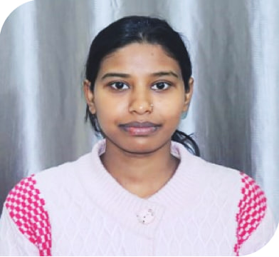

Our Team

Mr. Praveen Kumar in the year 2016 came to Bihar under a Criminal Justice Fellowship Program of Tata Institute of Social Sciences, Mumbai. In the course of fellowship, he intervened in several prisons and issues of socio-legal aid. After a sustained endeavor of three years of extending socio-legal aid services towards custodial population lodged in various jails of Bihar. He met Santosh Kumar and Shubhendu Shekhar during his fellowship journey. They all encountered several issues pertaining towards disadvantaged custodial population. Thus they registered LAW Foundation as a Trust in 2019 whose core work revolves around the areas of socio-legal aid services, networking, training, research, and documentation, besides advocacy of custodial, institutional, legal, and constitutional rights of the custodial population. It is also focused on the rehabilitation and re-integration of socioeconomically marginalized and vulnerable individuals and groups.